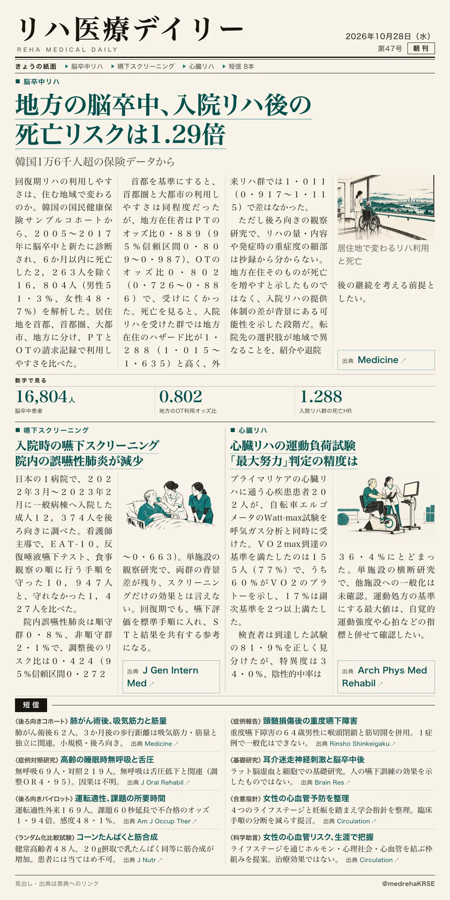
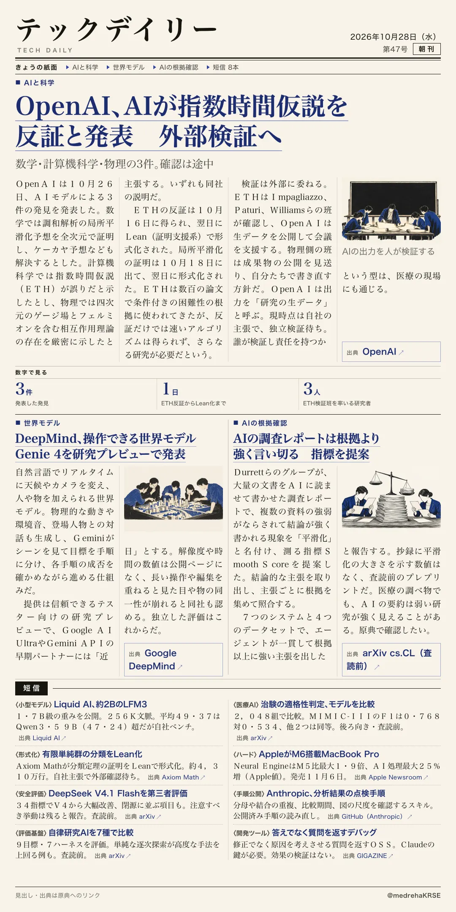

リハ医療デイリー
地方の脳卒中、入院リハ後の死亡リスクは1.29倍
韓国1万6千人超の保険データから
リハの利用しやすさは住む地域で変わるのか。韓国の脳卒中16,804人を追った全国コホートで、地方在住者はPT・OTを受けにくく、入院リハ群では死亡ハザード比が1.288でした。

テックデイリー
OpenAI、AIが指数時間仮説を反証と発表 外部検証へ
数学・計算機科学・物理の3件。確認は途中
OpenAIが、AIモデルによる数学・計算機科学・物理の3件の発見を発表。指数時間仮説（ETH）の反証は、外部の研究者が検証します。
